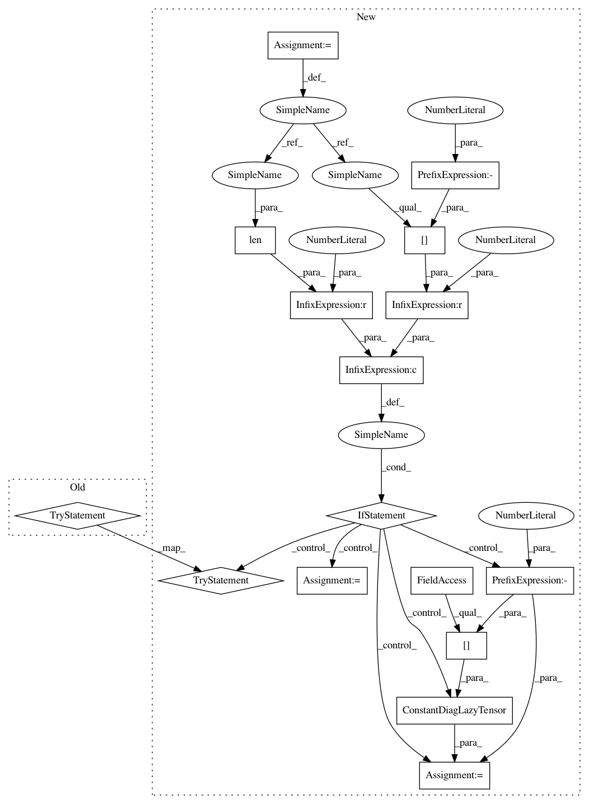

000b424d2b998b77bd1dae6b9f9f5f36f787a03a,gpytorch/lazy/kronecker_product_lazy_tensor.py,KroneckerProductLazyTensor,add_diag,#KroneckerProductLazyTensor#Any#,89
Before Change
if not self.is_square:
raise RuntimeError("add_diag only defined for square matrices")
try:
expanded_diag = diag.expand(self.shape[:-1])
except RuntimeError:
raise RuntimeError(
"add_diag for LazyTensor of size {} received invalid diagonal of size {}.".format(
self.shape, diag.shape
)
)
return KroneckerProductAddedDiagLazyTensor(self, DiagLazyTensor(expanded_diag))
def diag(self):
r
After Change
if not self.is_square:
raise RuntimeError("add_diag only defined for square matrices")
diag_shape = diag.shape
if len(diag_shape) == 0 or diag_shape[-1] == 1:
// interpret scalar tensor or single-trailing element as constant diag
diag_tensor = ConstantDiagLazyTensor(diag, diag_shape=self.shape[-1])
else:
try:
expanded_diag = diag.expand(self.shape[:-1])
except RuntimeError:
raise RuntimeError(
"add_diag for LazyTensor of size {} received invalid diagonal of size {}.".format(
self.shape, diag_shape
)
)
diag_tensor = DiagLazyTensor(expanded_diag)
return KroneckerProductAddedDiagLazyTensor(self, diag_tensor)
def diag(self):
r
In pattern: SUPERPATTERN
Frequency: 3
Non-data size: 16
Instances
Project Name: cornellius-gp/gpytorch
Commit Name: 000b424d2b998b77bd1dae6b9f9f5f36f787a03a
Time: 2020-08-01
Author: balandat@fb.com
File Name: gpytorch/lazy/kronecker_product_lazy_tensor.py
Class Name: KroneckerProductLazyTensor
Method Name: add_diag
Project Name: cornellius-gp/gpytorch
Commit Name: 9e1d63412660107484fd06e69ded59fca201f8ca
Time: 2020-07-21
Author: balandat@fb.com
File Name: gpytorch/lazy/lazy_tensor.py
Class Name: LazyTensor
Method Name: add_diag
Project Name: cornellius-gp/gpytorch
Commit Name: 9e1d63412660107484fd06e69ded59fca201f8ca
Time: 2020-07-21
Author: balandat@fb.com
File Name: gpytorch/lazy/kronecker_product_lazy_tensor.py
Class Name: KroneckerProductLazyTensor
Method Name: add_diag